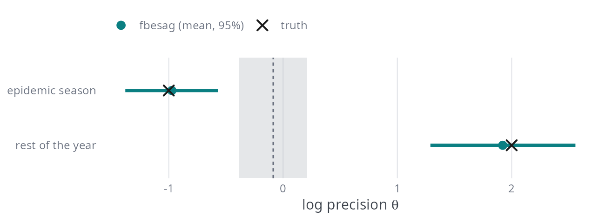
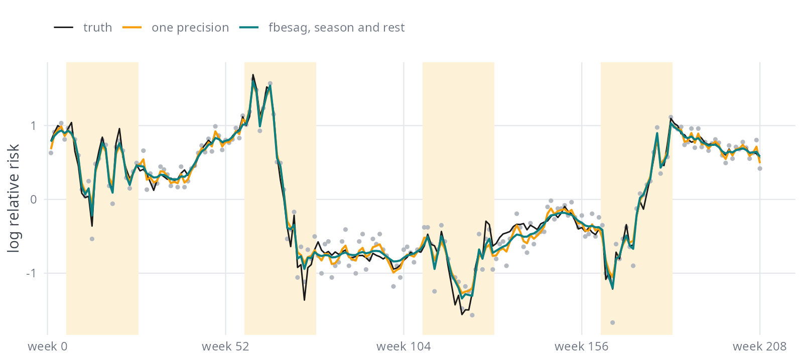

gmrfs · fbesag
fbesag in time
On a time line, fbesag is a random walk whose step size differs between periods.
A time line as a graph
With neighbours $t-1$ and $t+1$ and one precision, the model is a first-order random walk:
$$x_t - x_{t-1} \sim \mathcal N\Big(0,\ \frac{1}{c\,\tau}\Big),$$
Here $c$ scales the model so that, with $\tau = 1$, the geometric mean of the marginal variances is 1. In fbesag a step inside period $k$ has precision $c\,\tau_k$; across periods, the mean of the two. A period need not be consecutive: below, one is the season of every year.
Example
Four years of simulated weekly counts: rough in weeks 6 to 26 ($\theta = -1$), smooth otherwise ($\theta = 2$).
library(INLA)
library(gmrfs)
library(Matrix)
n <- 4 * 52 # four years of weeks
week <- rep(1:52, 4)
season <- ifelse(week >= 6 & week <= 26, 1, 2) # 1: epidemic season, 2: the rest of the year
# the time line: each week is a neighbour of the next one
W <- sparseMatrix(i = 1:(n - 1), j = 2:n, x = 1, dims = c(n, n), symmetric = TRUE)
m_one <- fbesag(W, id = rep(1, n)) # one precision: a random walk
m_season <- fbesag(W, id = season, sd_gamma = 1) # one precision for the season, one for the rest
## simulated: rough in the season, smooth in the rest of the year
set.seed(3)
x <- as.numeric(gmrf_sample(m_season, theta = c(-1, 2)))
E <- rep(50, n)
d <- list(y = rpois(n, E * exp(x)), E = E, idx = 1:n)
fit_one <- inla(y ~ 1 + f(idx, model = m_one), family = "poisson", E = E, data = d)
fit_season <- inla(y ~ 1 + f(idx, model = m_season), family = "poisson", E = E, data = d)
round(fit_season$summary.hyperpar[, c("mean", "0.025quant", "0.975quant")], 2)
fit_season$mlik[2] - fit_one$mlik[2] # log Bayes factor for the two periods mean 0.025quant 0.975quant
Theta1 for idx -0.97 -1.38 -0.57
Theta2 for idx 1.92 1.29 2.56
[1] 29.52448Both intervals cover the truth.
Precisions

Fit

RMSE outside the season: 0.081 (one precision), 0.066 (fbesag); in the season: 0.145, 0.125.